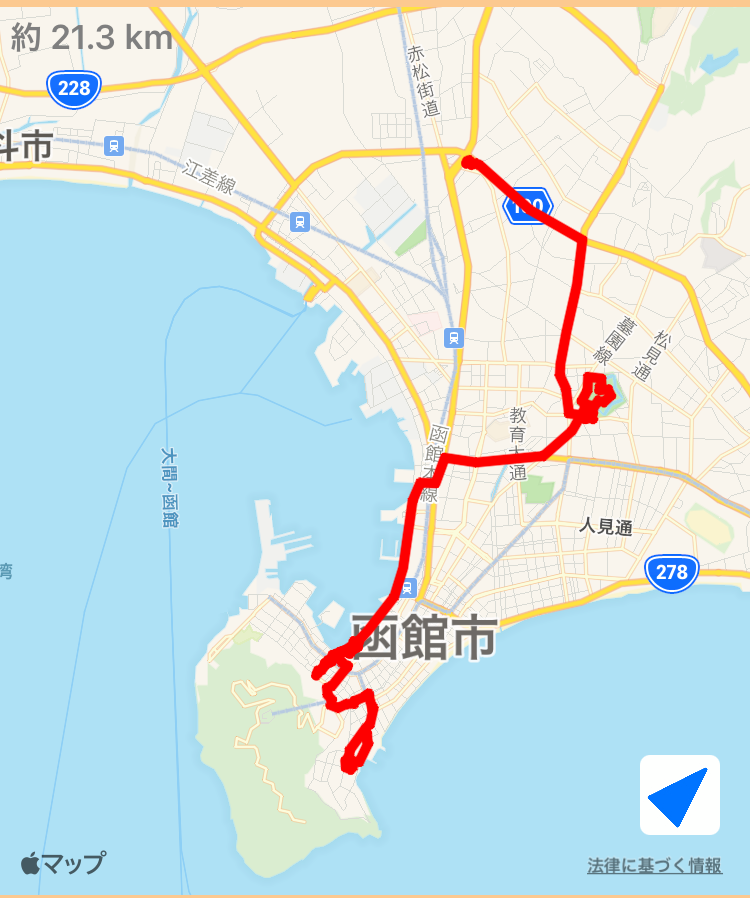

~31日目~
8/1 礼文島⇨みさき台公園キャンプ場
~32日目~
8/2 みさき台公園キャンプ場⇨旭川
~33日目~
8/3 旭川⇨札幌
~34日目~
8/4 札幌⇨小樽⇨札幌
~35日目~
8/5 札幌市内
~36日目~
8/6 札幌⇨新千歳空港
~37日目~
8/7 新千歳空港⇨函館
~38日目~
8/8 函館市内

~39日目~
8/9 函館市内
~40日目~
8/10 函館⇨青森
~41日目~
8/11 青森市内
~42日目~
8/12 青森⇨奥入瀬渓流⇨青森
~43日目~
8/13 青森⇨岩木山⇨大館
~44日目~
8/14 大館⇨男鹿⇨秋田
~45日目~
8/15 秋田⇨田沢湖⇨横手